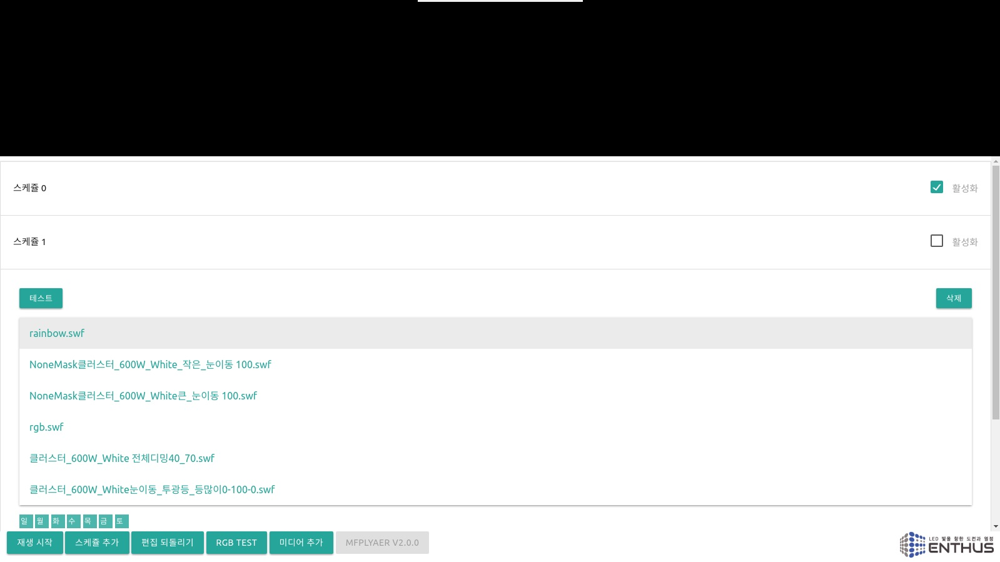
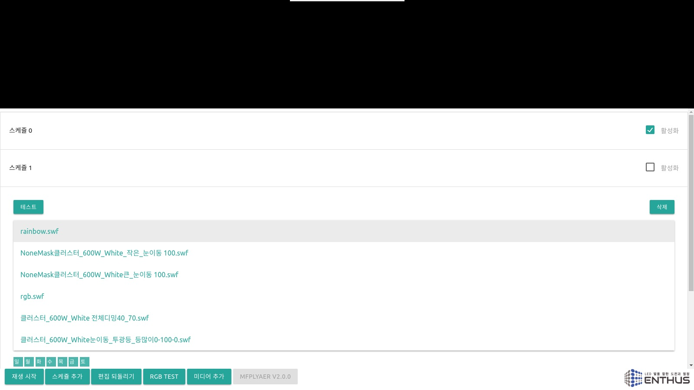

미디어 추가
USB 메모리를 통해 미디어를 추가합니다. USB 메모리에 swf 파일을 복사하고 서버에 연결합니다. 미디어 추가 버튼을 누르고 USB 메모리를 찾아 swf 파일을 선택합니다.

스케쥴 편집 창에서 추가된 미디어 파일을 확인할 수 있습니다.

USB 메모리를 통해 미디어를 추가합니다. USB 메모리에 swf 파일을 복사하고 서버에 연결합니다. 미디어 추가 버튼을 누르고 USB 메모리를 찾아 swf 파일을 선택합니다.
스케쥴 편집 창에서 추가된 미디어 파일을 확인할 수 있습니다.
